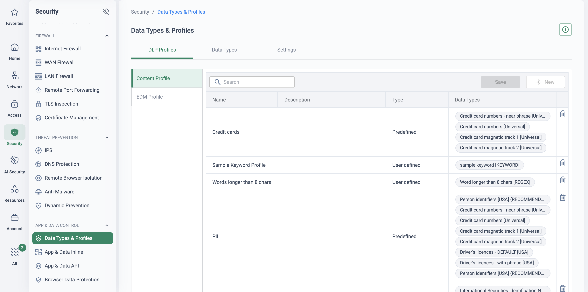

Segment 4 of the 60-minute platform demo, minutes 25–30. CASB has just shown the prospect
which applications their users adopted; this segment shows what is inside the upload. Five
minutes of screen time on data types, one profile, one inline Data Control rule, and the
incident it produces — who, what data type, where, and the action taken — in the same
console and from the same single-pass engine as every segment before it.
The same engine that already sees every upload can read what is inside it and
stop sensitive data leaving — no new deployment, one policy, one event stream.
Because every user and site already sends its traffic through the Cato PoP, DLP is not a
second product bolted on beside the proxy: it is a Data Control rule switched on where the
traffic already is. Inline, the engine classifies the application, recognises the activity
(upload, download, share) and scans the content against predefined data types — regional PII,
payment-card numbers — and machine-learning document classifiers for families such as HR,
Finance, Legal and Medical. The depth page
Data Security with CASB & DLP carries the full
scenario table and the licence boundary: Application Control is in the CASB licence, Data
Control rules additionally need the DLP licence.
The proof point of this segment is not the rule, it is the incident. A DLP event in most
tools tells the analyst which rule and which user; it does not show what matched. Cato's
Data Incident pane carries the full chain — user, application, activity, file, matched data
types, action — and, where forensics are enabled, encrypted evidence written to storage the
customer owns, retrievable under role-based access and logged to the Audit Trail
(Data Breach Investigation with DLP Forensics).
That is the slide the security lead photographs.
The five-minute story
Bridge in, three beats, bridge out
Bridge in — from CASB (B3)
“CASB tells you which application. DLP tells you what is inside the upload.”
Beat 1 — the vocabulary already exists
Say: “You do not write regular expressions on day one. The platform ships
a catalogue of predefined data types — card numbers, regional identifiers, postal
addresses by country — and ML classifiers that recognise a contract or an HR document by
what it is, not by a pattern. A profile is just the handful of types you care about.”
Show:Security → Data Types & Profiles — the
DLP Profiles tab with a predefined Credit cards profile and a predefined
PII profile beside a user-defined keyword profile.
Beat 2 — one rule, in line, where the traffic already is
Say: “This is the same rulebase you saw for CASB. One row says: this
profile, uploaded by these users, to any cloud application — block, tell the user why,
raise an event. Nothing else changed.”
Show:Security → DLP Configuration — the Data
Control rule that blocks uploads containing credit-card numbers, with its source group,
activity, profile and action.
Beat 3 — the incident, not the rule
Say: “Here is what the analyst sees: who, which application, which
file, which data type matched, what we did about it — and the evidence locked behind a
role-gated button whose use is logged. That is the difference between a DLP alert and an
investigation.”
Show:Monitor → Events → the Data Incident pane
for a blocked upload, then Monitor → Data Protection Dashboard
for the rules firing across the estate.
Bridge out — to ZTNA (B4)
“So far every flow was a user going out. Now the other direction: users reaching your private applications.”
On the platform
Where this sits in the Cato SASE platform
1Marcus uploads a spreadsheet through the Cato Client; the Bristol Office Socket sends the same kind of flow.
2Decrypted once under TLS inspection, the single-pass engine asks one more question: does the content match?
3The Data Control rule blocks the card-number upload to personal storage; SharePoint stays allowed.
4The incident (user, file, matched data type, action, evidence) lands in Events and the dashboard.
What the engine does
Content inspection as one more decision in the single pass
The upload leaves the user's device through the Cato Client (or the branch Socket), is
decrypted at the PoP under the TLS inspection policy, and passes the same single-pass
engine as the SWG, threat-prevention and CASB decisions before it. DLP adds one question —
does the content match a profile? — and the answer decides the action for that activity
on that destination. The event, the incident and the evidence come out of the same flow.
Cato Client and Socket tunnels to the PoPSanctioned destination — allowedSensitive content to unsanctioned storage — blockedIncident telemetry — Events, dashboard, evidence
The upload is decrypted once at the PoP; the Data Control rule reads the content against a profile and decides per activity and per destination. The incident and its evidence are outputs of the same pass, not a second system.
🔍
Discovery without deployment
Traffic already traverses the PoP — DLP is a policy switched on where the traffic is, not an agent, a log upload or an extra proxy.
📚
Predefined types and classifiers
A Data Catalog of country-specific data types with tunable occurrence thresholds, plus ML document classifiers for HR, Finance, Legal, Medical and more — profiles are assembled, not authored from scratch.
🎚️
Activity-level control
Not a crude allow or deny: permit read-only use of an application while blocking uploads or shares that carry a matched profile, scoped per user group.
🔒
Same engine for SaaS and on-prem
One DLP policy follows the data whether the application lives in M365 or in the London DC behind a Socket — one console, one event stream.
Demo runbook
Five minutes on screen
Prerequisite — stage this before the day
TLS inspection must be enabled for the demo user: Data Control rules only see the traffic
TLS inspection actually decrypts, so with it off there are no activities and no content to
scan. Stage it per TLS Inspection: Staged Rollout
Playbook, and pre-stage a blocked incident so you are not waiting on a live upload in
the room. The DLP licence must be active on the demo tenant.
Menu paths below use the library's standard
names. On a current-navigation tenant the same screens sit under Security →
App & Data Inline (for DLP Configuration) and Security →
Security Monitoring → Data Protection Dashboard, as the screenshots' breadcrumbs show.
Open the vocabulary 1 min
Security → Data Types & Profiles
Say: “Profiles are built from a catalogue you did not have to write —
regional data types with occurrence thresholds, and ML classifiers that recognise a
document by family.”
Show: The DLP Profiles tab — the predefined Credit cards and
PII content profiles and their data-type chips, with a user-defined keyword
profile beside them. Click the Data Types tab only if asked; the Data Catalog list is
long and this segment has five minutes.

Beat 1 on screen (demo tenant): the DLP Profiles tab with two predefined content profiles — Credit cards and PII — each a bundle of universal and regional data-type chips, beside two user-defined profiles built from a keyword and a regex. Point at the Type column: predefined is the catalogue, user-defined is the customer's own.
Show the one inline rule 1.5 min
Security → DLP Configuration
Say: “This is the same rulebase CASB used two minutes ago. Row three
says: these departments, uploading to any cloud application, content matching the
credit-card profile — block, high severity, event. The user is told why. Write it against
an unsanctioned-storage category and you have the rule most customers promote to block
first.”
Show: The Data rule Block uploading credit card numbers — source
groups, Any Cloud Application, activity Upload, profile Credit cards, action Block —
sitting above the monitor-mode rows that gather evidence. Mention, without opening it,
that a rule evaluates at most 20 data types across its profiles and files are scanned up
to 50 MB.
Beat 2 on screen (demo tenant, fictional groups): App and Data rules in one rulebase. The two Data rows are the DLP story — a profile, an upload activity, a destination class and a Block action — and the App rows around them are the CASB story from the previous segment, which is the point: one policy, two kinds of decision.
Open the incident 1.5 min
Monitor → Events
Say: “A DLP alert that says ‘rule fired’ is not an investigation. Here is
who, which application, which file, which data type matched and what we did — and the
evidence is locked behind a button that is role-gated and logged to the Audit Trail.”
Show: Filter to the DLP rule, open the pre-staged block event and walk the
Data Incident pane top to bottom: action, user, application, activity type, file name,
rule, DLP profile, matched data types. Stop at the Evidence is Secured panel —
do not click View Evidence unless the room asks; the lock is the point. Presenter note:
the public KB documents auditing of configuration changes; per-view evidence logging is
design intent, so press View Evidence once on the demo tenant before the day and confirm
the entry appears under Administration → Audit Trail before you
say it is logged.
Beat 3 on screen (demo tenant, demo identity): a blocked upload of a document containing credit-card numbers to Microsoft Copilot — rule Copilot restrict PII, profile CC-UK, matched data type Credit card numbers — with the forensics panel locked beneath it. The destination here is a GenAI app; the pane is identical for a personal cloud drive.
Zoom out to the dashboard 1 min
Monitor → Data Protection Dashboard
Say: “And across the estate: which rules fire most, how many events were
blocked versus monitored, and when. Monitor rules at the top are the evidence you gather
before you promote anything to block.”
Show: The Inline Protection tab — Top Violating Rules with a monitor-mode
upload rule leading, a personal-OneDrive block enforcing beneath it, and the violations
timeline. The dashboard reads back up to 90 days; the drill from a rule row into a single
incident is the path you just walked in reverse.
Beat 3, wide shot (demo tenant): the Inline Protection dashboard — monitor-mode upload rules accumulating events above an enforced personal-OneDrive block, with the violations timeline beside them. This is where a customer's own PoV starts its drill-down.
Transition. Close on the dashboard, not the incident, so the last frame is
the estate rather than one user, then turn to the room: “So far every flow was a user going
out. Now the other direction: users reaching your private applications.” Open
Segment 5: ZTNA. If you are running late, the cut plan folds
this segment's incident view into the CASB events screen — show the Data Incident pane
there and skip the dashboard.
If they ask
Four questions this segment provokes
“How do we stop this drowning us in false positives?”
Run new rules in monitor with events on,
review the match report with the people who own the data, and tune before anything
blocks — raise a noisy data type's occurrence threshold, require co-occurrence with an
All (AND) profile, or step up to Exact Data Matching against their actual records. The
PoV on the depth page is built around exactly that review.
Yes, with DLP Forensics: an encrypted
snippet — or the full file, up to 20 MB — is written to an S3 bucket in the customer's
own AWS account, encrypted with a per-account key. Viewing it is governed by a dedicated
permission and logged to the Audit Trail (verify the view entry on your own tenant before
asserting it), so seeing the event does not mean seeing the data.
The predefined ML document classifiers
recognise document families — Legal, Contracts, HR, Finance, Medical among them — so a
profile can match a contract or a power of attorney by what it is rather than by a
pattern inside it. Be honest about the edge: classification is class-aware, not
matter-aware, and OCR image scanning does not apply to ML classifier types.
“Is this in the CASB licence, and what else do we need?”
Application Control is included in the
CASB licence; Data Control rules additionally require the DLP licence. Operationally the
prerequisite is TLS inspection on the users in scope, and the on-screen block notification
needs a Windows, macOS or iOS Client connected remotely with OS notifications not
suppressed — stage both before promising a blocked upload with a message on screen.
![CMA App & Data Inline Protection, Application Control Policy tab, Application Control and Data Control toggles on. A rule group of nine App and Data rules with Type, Name, Source, Application, Criteria, Severity, Action and Tracking columns, including the Data rule 'GenAI Sensitive Data' (Marketing and Finance users, Generative AI Tools, Upload, Credit cards and PII profiles, High, Block) and the Data rule 'Block uploading credit card numbers' (four departments, Any Cloud Application, Upload, Credit cards profile, High, Block), beside App rules that allow a named Microsoft tenant, block personal OneDrive tenants and monitor Gmail attachments](../assets/img/cma-app-data-inline-policy.png)
![CMA Data Incident detail pane: header row Time, User, Violation CC-UK, Action Block; Details listing Action Block, user name and email, Application Microsoft Copilot, App Activity Type Upload, Application Risk 2, File Type Microsoft Office Documents, File Name 'Document with CC Information.doc', Full Path URL, Rule 'Copilot restrict PII', DLP Profiles CC-UK, Matched Data Types 'Credit card numbers [Universal]'; below, a Forensics section with a locked 'Evidence is Secured' panel and a View Evidence button](../assets/img/dlp-incident-cma.png)